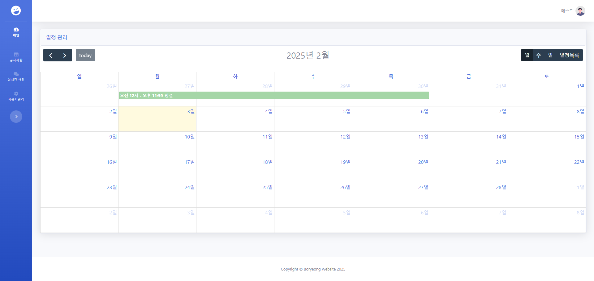
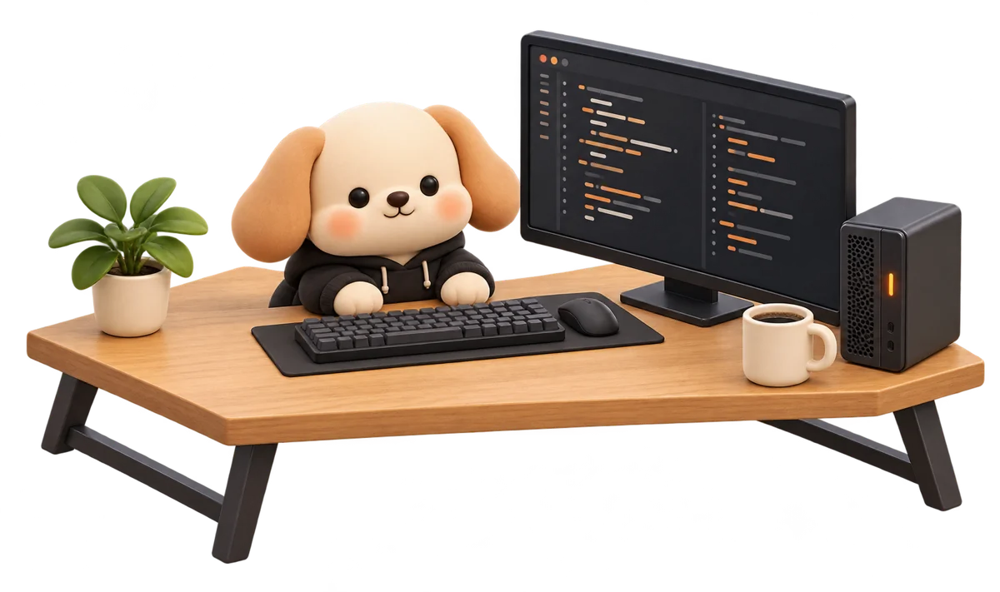

BACKEND / WEB DEVELOPER
서비스를 만들고,
문제를 해결합니다.
Java와 Spring으로 개발부터 운영까지.
배움을 지속하고, 도전을 즐기는 개발자 김보령입니다.
서울 · 페이지원 재직 중

SCROLL TO EXPLORE ↓
BUILD. SOLVE. KEEP LEARNING.
01 / EXPERIENCE
회사 경력
만들고, 개선하고, 운영해 온 경험.
2026.02 — 현재 페이지원기업솔루션파트 · 대리 그룹웨어 운영·고도화 / API 연계 / DB MCP
- Oracle 조회 전용 DB MCP 내부 분석 도구 설계·개발 및 운영 도입
- NAVER WORKS 고객사별 API 통합 관리 서비스 개발
- SaaS 그룹웨어 외부 API 설계 및 인증·조직도 조회·감사 로그 구현
- 전자결재·문서유통·ERP 및 인사 연동 장애 분석과 기능 고도화
2023.04 — 2025.08 미디어젠WEB개발팀 · 개발 / PL 데이터 플랫폼 / 음성 인식 / 공통 프레임워크
- K-BDS 바이오 데이터 분석 시스템 고도화 및 운영 관리
- PubMed 데이터 정제 파이프라인과 사용자별 연구 환경 생성 자동화
- AMUSE 음성 인식 모델링 시스템의 Java·Python 서버 연계
- MZ Core Framework 공통 웹 개발 프레임워크 구축
- KERIS 및 KISTI AI 신약 개발 플랫폼 개발·고도화
2022.02 — 2023.02 자이로소프트솔루션사업부 · 웹개발 CAD 기반 공간·시설관리
- 연세의료원 공간관리시스템 개발 및 PL
- SK하이스텍 오피스지원센터 비품·재고·설문 관리 개발
- 한국사회보장정보원 상면관리시스템 WebGL 전환 및 DB 고도화
- 기관별 공간·시설관리 시스템 유지보수 및 운영 지원
회사명을 누르면 담당 업무를 확인할 수 있어요.
02 / PERSONAL PROJECTS
개인 프로젝트
배운 것을 직접 만들어 보는 시간.
03 / SKILLS
보유 기술
- Backend
- Java · Spring · Spring Boot
JPA · MyBatis · REST API - Data
- Oracle · MariaDB · PostgreSQL
Redis · SQL - Infrastructure
- Docker · Kubernetes
GitLab CI/CD · AWS - Web
- JavaScript · jQuery · JSP
HTML · CSS
04 / LEARNING
학력 및 자격증
-
2025.02 — 재학 중
한국방송통신대학교
컴퓨터과학부 · 편입
-
2015.03 — 2022.02
두원공과대학교
스마트소프트웨어 · 졸업
-
2021.08 — 2022.01
구디아카데미
공공데이터 융합 자바·스프링 개발자 양성과정 수료
-
2024.04
SQLD
SQL 개발자 자격 취득
05 / CONTACT
함께 이야기 나눠요.
개발과 협업, 새로운 기회에 대해 편하게 연락 주세요.